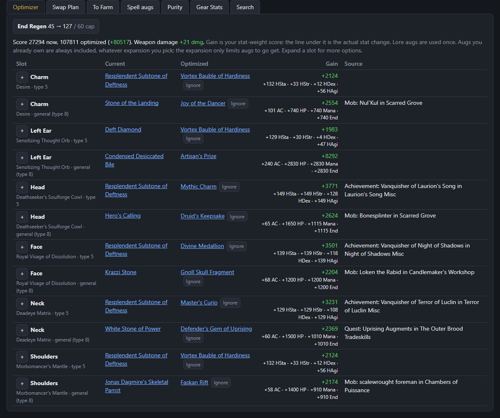
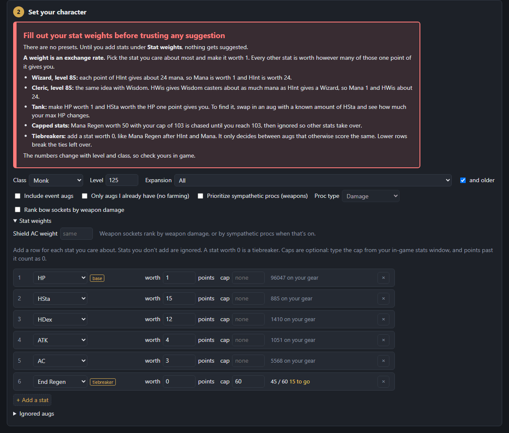
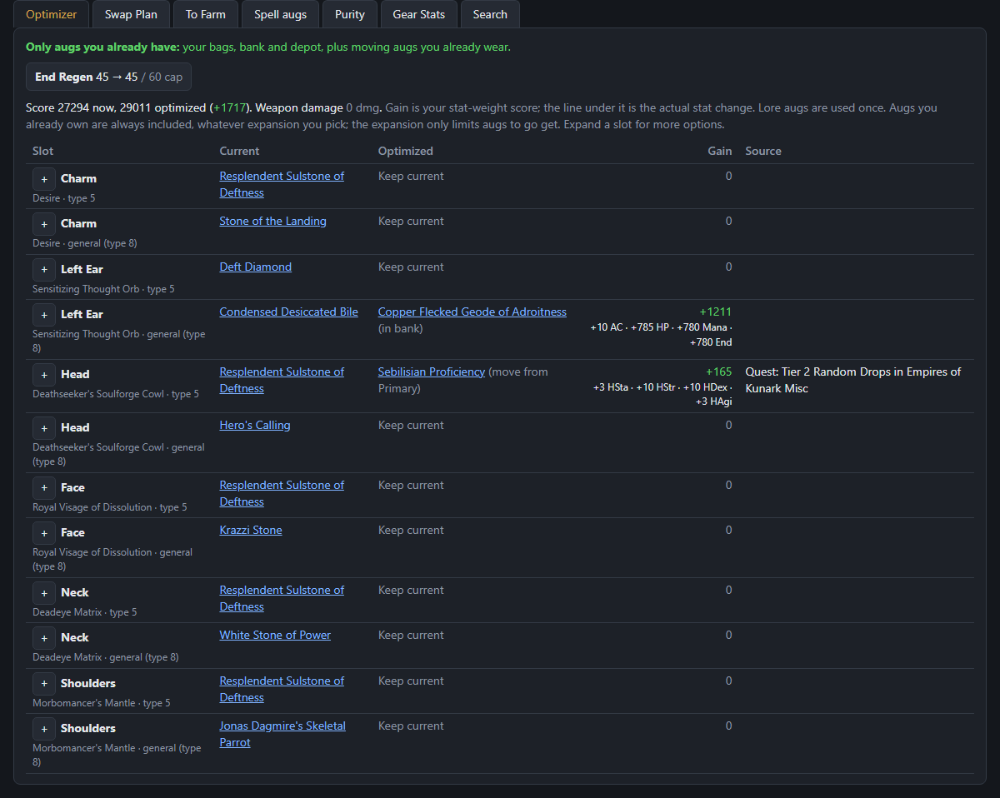
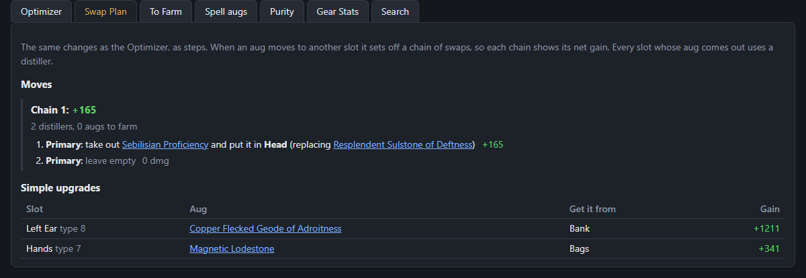
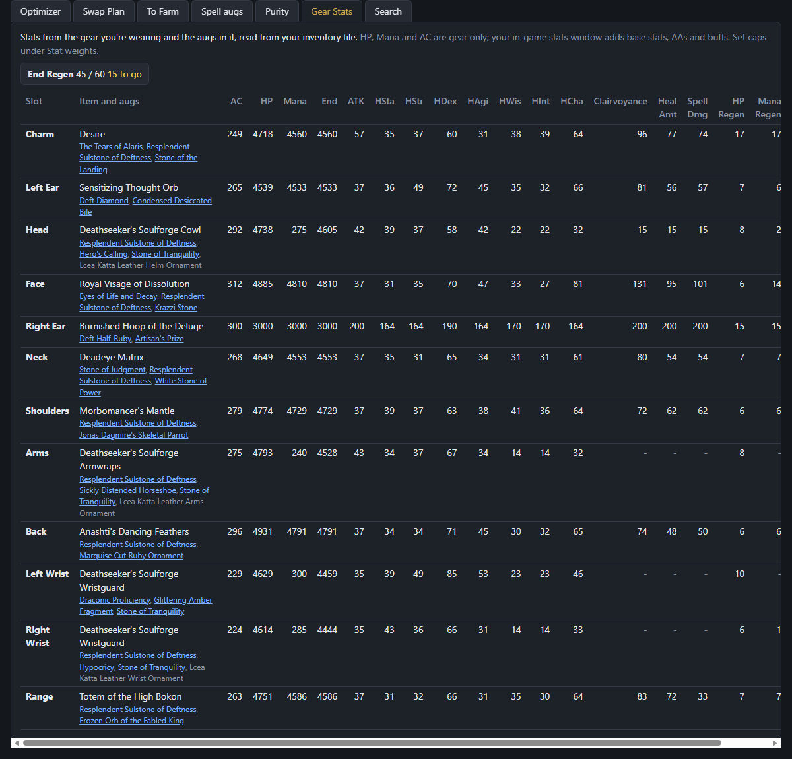
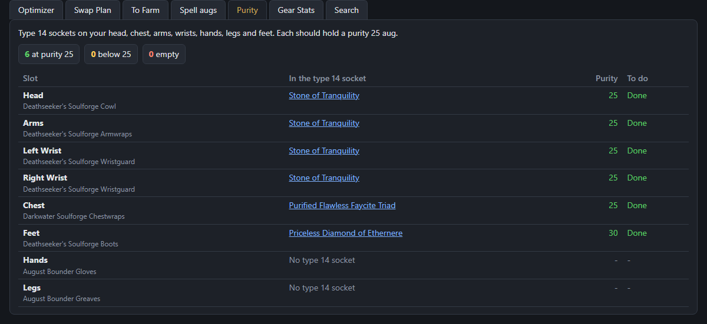

BIS Aug
Ever wondered which augs your EverQuest gear should really have? Load your inventory file and BIS Aug checks every socket you wear, works out the best aug for each one by the stats you care about, and tells you what to equip, what to move and what to go farm.
1Save your inventory
In game, type /outputfile inventory. EverQuest saves Name_server-Inventory.txt in your game folder.
2Drop it in
Drag the file onto the page. Your class is worked out from your gear, and each character keeps its own settings.
3Set your weights
Tell it what each stat is worth to you. Suggestions, swaps and farm lists update as you type.
The best aug for every socket
Every aug socket on your worn gear, what's in it now, the best aug for it and how much you gain, with the actual stat change underneath. Lore augs are only used once, and you can see where each upgrade drops. Expand any slot for the next best options.

Weights you set, as exchange rates
No one-size-fits-all presets. Pick the stat you care about most, make it worth 1, and say what every other stat is worth next to it. Give a stat a cap from your in-game stats window and it stops counting once you reach it. A stat worth 0 breaks ties.

Only what you already have
Not in the mood to farm? Tick one box and it builds your best setup from the augs in your bags, bank and depot, and from moving augs you already wear to the slots that get more out of them.

A swap plan you can follow
The same changes as steps: which augs to pull, where they go, and how many distillers it takes. Chains of moves show their net gain, so you can skip the ones that aren't worth the trouble.

Your gear's stats at a glance
Every worn item with its augs and stats, added up, with your caps and how much room is left under each.

Purity and spell augs too
Checks the type 14 sockets on your visible armor for purity 25, and lists the type 3 spell augs for your class with which ones you have or are missing.

Your file stays with you. BIS Aug reads your inventory in your browser and keeps it there. Nothing is uploaded.